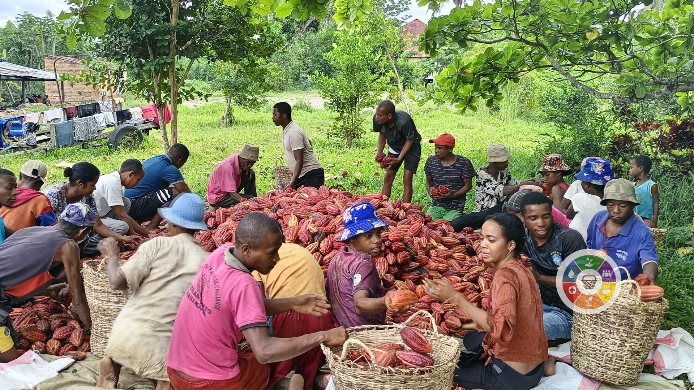
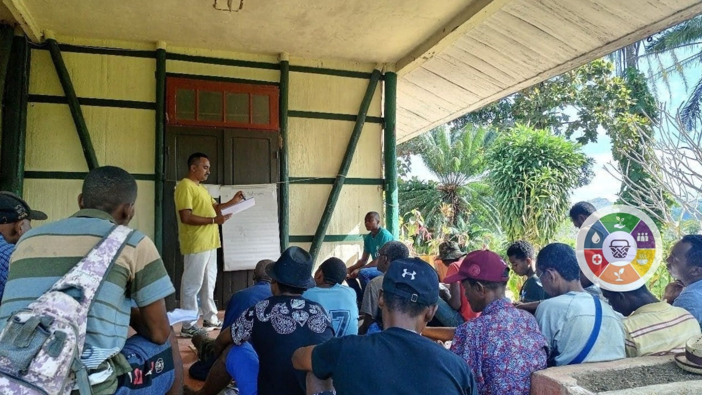

Nos Projets

Projet WASH et Nutrition Communautaire
Nous œuvrons à renforcer l’accès à l’eau potable et à l’assainissement en milieu rural, tout enpromouvant des pratiques nutritionnelles saines.
En savoir plus

Agriculture durable et sécurité alimentaire
Nous accompagnons les agriculteurs dans l'adoption de techniques d'agriculture intelligente face au climat pour améliorer les rendements et la sécurité alimentaire.
En savoir plus
Renforcement de la résilience face aux catastrophes
Nous aidons les communautés vulnérables à mieux se préparer et à se relever des catastrophes naturelles en mettant en place des plans d’urgence.
En savoir plus

Gouvernance locale et participation citoyenne
Nous renforçons les capacités des acteurs locaux et des citoyens pour une gouvernance plus transparente et inclusive, favorisant le développement local.
En savoir plus